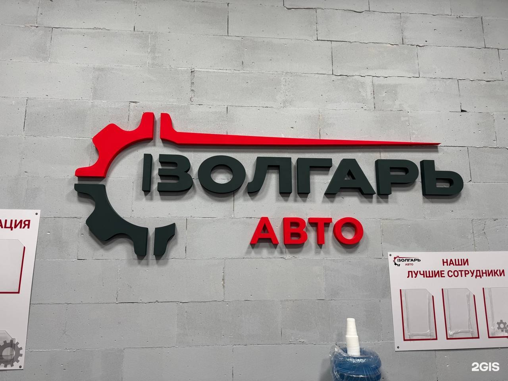

2ГИС
Оценок: 98 · Отзывов: 85
Открыть отзывыПроверено 14.11.2026Самара / Куйбышевский район
Компьютерная диагностика, замена масла, ремонт ходовой части и обслуживание климатических систем.
+7‒927‒009‒26‒26Уточните часы по телефону
по предварительной записи

Для вашего автомобиля
Найдите нужную работу или позвоните, чтобы обсудить ваш вопрос.
Регулировка развал схождения ВАЗ, Иномарки .
от 1 600 ₽
Заправка авто кондиционеров фреоном R134a.
2 000 ₽
Состав работ за указанную сумму уточняйте по телефону.
600 ₽
При покупке в нашем магазине масла и фильтра замена БЕСПЛАТНО!
Бесплатно
Чтение кодов неисправностей ЭБУ. Поиск неисправности электрооборудования. Установка доп. оборудования.
от 1 200 ₽
Шиномонтаж сезонный, установка камеры, установка шин на герметик. Балансировка.
1 000 ₽
Уточняйте по телефону
Уточняйте по телефону
Уточняйте по телефону
Уточняйте по телефону
Уточняйте по телефону
Уточняйте по телефону
Уточняйте по телефону
Уточняйте по телефону
По этому запросу услуг не найдено. Попробуйте другое название или позвоните в мастерскую.
Дата прайса в источнике: Обновлено 19 октября 2026. Стоимость и состав работ уточняйте по телефону. Цены приведены с условиями источника и не являются публичной офертой.
Опыт посетителей
Рейтинги площадок и пересказы отзывов. Полные тексты доступны по ссылкам.
Посетитель положительно оценивает сварку глушителя и объяснения по состоянию ходовой.
Читать на картахВ отзыве отмечены быстрая диагностика и устранение неисправностей двигателя.
Читать на картахБудем на связи
| Понедельник | 08:00–22:00 |
|---|---|
| Вторник | 08:00–22:00 |
| Среда | 08:00–22:00 |
| Четверг | 08:00–22:00 |
| Пятница | 08:00–22:00 |
| Суббота | 08:00–22:00 |
| Воскресенье | 08:00–22:00 |
по предварительной записи
Часы в праздники уточняйте по телефону.
Карта © OpenStreetMap
Открыть карточку и маршрутРасскажите, что нужно автомобилю. Уточните стоимость и время для визита.